{kind=link}
{kind=link}
{kind=link}
{kind=link}
{kind=link}
{kind=link}
{kind=link}
{kind=link}


MPM 1/48 Expert Series Focke-Wulf Fw-189A
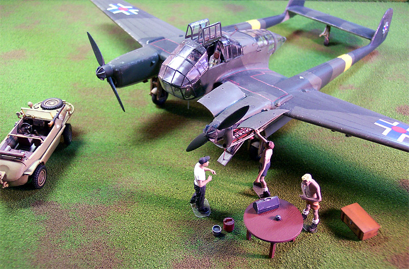
Kit #48034 MSRP $49.98 USD
Images, text and model Copyright 2002, 2004 by Matt Swan
Developmental History
The Focke-Wulf Fw 189A observation plane was a fine example of an aircraft fulfilling its role. It was so effective that the Allies referred to it as the "Flying Eye". The craft began its life in the late 1930's in competition with several other aircraft for an RLM contract to develop a forward observation platform. One noteworthy competitor was the Blohm und Voss BV-141, which was arguably the ugliest aircraft of the period. Over 8,000 189's were produced in three variants; the "A" or observation version, the "B" or training version and a limited number of "C" ground attack versions. Today, only one example survives and is currently being restored at the British Aerospace Museum.
The 189A was powered by a pair of Argus As 410 A-1 inverted V-12 engines producing 465 horsepower each giving it a top speed of 159 miles per hour at 22,000 feet. A crew of three manned it; pilot, observer/bombardier and gunner. Armament was light with two 7mm MG15 machine guns mounted in the gondola and two MG131 13mm cannons mounted in the wing roots. It could carry a small bomb load and was effective where air superiority was maintained. The aircraft had the ability to use short unpaved airstrips, had outstanding maneuverability and was of rugged construction. It was used primarily on the Eastern front and served with the Slovakian, Hungarian and Rumanian air forces. The surviving example had been forced down by Russian fighters in Finland and experienced severe damage in the crash landing.
Construction
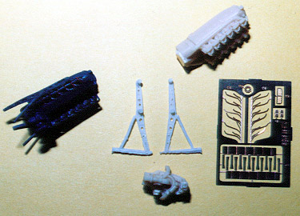
The expert series kit, by MPM purchased through Squadron, is impressive right from the start. The box is heavy- this is a full box. The kit includes two Argus engines, replacement cowling pieces for both engine nacelles and many resin accessories for the crew gondola. Photo etched brass and steel pieces are included along with an assortment of screens for different instruments. There are even extra resin pieces in case you screw up a few.
There is a complete set of injection molded canopy pieces and a set of vacuform front canopy pieces. The instructions are clear and include several sketches of the craft showing some wiring diagrams and views of the original pieces - these are great for super-detailing. As I did the initial inventory of pieces problems cropped up right away, the cowling pieces and the MG131 gun barrels were badly warped and the decals were severely mangled. I contacted Squadron immediately and had a complete replacement of the resin package and decals within a few days. When they sent these pieces they also included an additional set of canopies, which allowed me to make some revisions that I'll explain later on.
After painting the interior pieces and completing the basic assembly of the main interior components I began to add detail derived from the sketches. Control panels, seats and ammunition stores were set aside for later detailing. The wiring was exposed inside the craft and consisted of several main umbilicals. In order to simulate this I stripped the wire from an old computer mouse. I took five strands of fine wire and super-glued them together and then painted the assembly light aircraft gray. Through trial and error the wiring was bent to the correct shape and the secured to the interior walls. Hold-down straps were fashioned from small strips of foil cut from a wine bottle wrap and super-glued in place. These were painted RLM 76 to contrast to the wiring. Three different umbilical sets had to be fashioned and installed before the ammunition storage could be put in place. Once these had dried completely the interior was washed with lampblack and dry brushed with steel to highlight details. The instructions indicate that the lower rear observation glass should be installed right at the beginning but I decided to wait until the very end to do this. It meant a little more work to trim the glass to fit from the outside but made overall painting much easier. Now the gondola halves could be assembled.
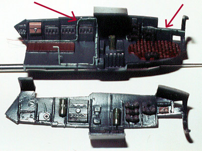
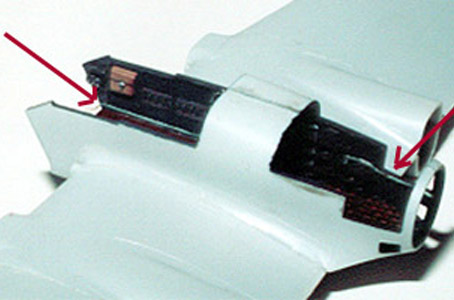
The red arrows indicate scratch built umbilical cables
The pilots and observers seats went together per the instructions but the control column was lacking in some very noticeable detail. There is a secondary level mounted on the column and an umbilical running from the compass to the cockpit floor. These were created from some medium fuse wire and computer mouse wire with foil hold down straps. This and the seats were set aside for later installation. The rudder pedals also lacked finer detail so I built the cable sheaths from phone wire insulation super-glued into place. These were set-aside after painting also. The side console for the pilot went together right off the directions but the main instrument cluster needed some extra work.
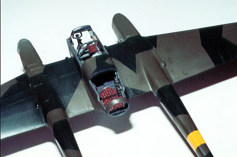
Since the back side was going to be visible and there were instrument pods already molded in place I decided to install a wiring harness to connect to the kit provided harness that ran up the starboard side. More mouse wire and a ten power magnifying glass to get this installed. I made the final umbilical long enough to lie overtop the kit umbilical to create a smooth transition once complete.
Once all the subassemblies were completed, painted, washed and dry brushed they were installed in the gondola. The main instrument panel needed some putty to smooth out the fit to the super structure and the cockpit seat didn't allow enough room for the pilots Armour to fit so some minor placement adjustment had to be made there. The control column seems to be a little oversized and had to be placed very carefully between the rudder pedal extensions. The upper levers on the side console interfered with the canopy on a test fit and had to be repositioned. The bomb-site assembly is really a neat piece of work consisting of three photo etched pieces with a lot of bends that looked pretty difficult but was a piece of cake. The rear gun-mounting ring was not a good fit and required a lot of putty to clean it up.
The original wing roots are molded for the "B" variant but conversion pieces are included. The tail booms have a distinct ridge running down the top and bottom and there was a sprue tab in the middle of every one of them. This took some careful trimming to clean up and the injection was incomplete here as well. This is a limited run kit so there are no locator pins anywhere. I found that I could tape the main pieces together with masking tape and then glue the seams with Tenex 7R being careful to remove the tape before the glue got to it. The wheel wells gave me a lot of trouble getting the glue joint cleaned up inside - had to resort to the Dremel with a delicate touch.
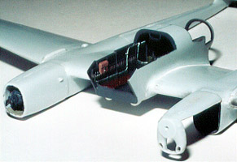 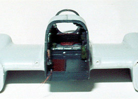 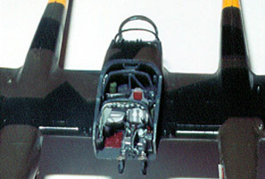
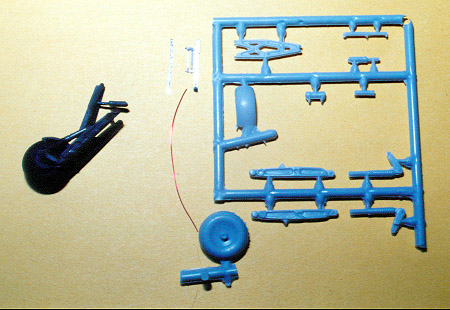
While the larger pieces were drying I moved on to the landing gear subassemblies. There is some really fine detail here but serious work with a Xacto knife was required to clean up slag filling interior areas. Each gear assembly consists of 13 individual pieces including some photo-etched pieces. I added brake lines with hold- down straps but they would have looked fine without any help. Here I used a Van Dyke brown wash over dry brushed steel to accent the parts.
The Argus engines are very nice and include photo etched ignition harnesses and rocker arm panels. The first sets of resin motor mounts were destroyed in shipping but the second sets were fine. I ended up with four complete engine assemblies, which got me to thinking. I wanted only one engine open and wanted to use a second to replace the molded cowling/engine piece on the starboard side. A third engine was completed and placed in a scratch built shipping case for diorama usage. The original cowlings needed some surgery as the top; bottom and nosepiece will be used. The Lower cowling piece has an access door that I wanted to open on the exposed engine, it had to be thinned down and cut out without causing damage to the surrounding material. I used a sanding drum on a Dremel to thin the majority off and finished with 400 grit automotive emery cloth. Once the engines were installed I added several pieces of wire insulation and fuse wire to represent various control, coolant and fuel lines feeding into the wing.
Painting, Markings and Finishing
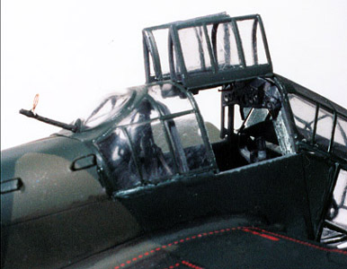
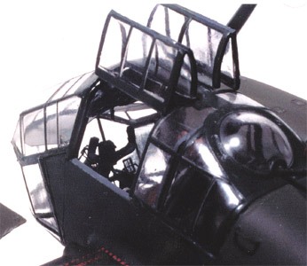
The rest of the assembly and painting were pretty much standard until I got to the greenhouse. I wanted to open the top access doors and had to spend quite a bit of research time before running across a picture of a 189 sitting on an airstrip with the doors open. They fold up and almost look like eyebrows when opened.
I cut out the doors from one canopy piece, saving the main structure, and repeated this with the second saving the doors. The main canopy becomes very fragile at this point and it's best to get the upper instrument console mounted as soon as possible to fortify the structure. The pilot's gun sight is way out of scale and has to be cut down considerably to fit properly.
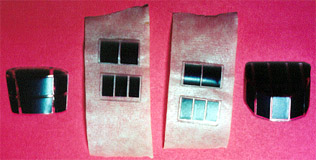
The kit was washed with a sludge wash made from Grumbacher Lamp Black acrylic paste, a few drops of liquid dish washing detergent and plenty of water. Finally, the kit was finished off with a coat of Testers Dull Coat Lacquer.
Conclusion
This is the first kit from MPM that I have built and it really impressed me. Overall parts fit was good, detail of parts was good, and instructions and associated drawings were very good. The decals behaved nicely and settled right down with a little Micro-Set followed by some Micro-Sol setting solution. As with most injection molded kits from the Czech Republic this one had no locating pins. This is not something for the beginner but if super detailing is what you want to do, this is a great place to start.
Additional pieces used for the photo session include a 1/48 Bandai Schwimmwagon K2, a set of Verlinden German summer ground crew resin figures and a table donated from another Verlinden figure set.
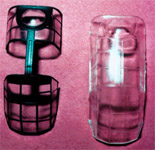
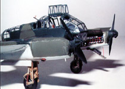
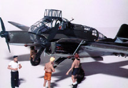
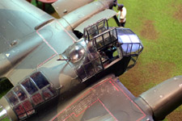
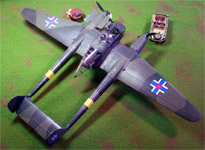
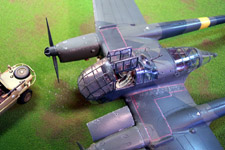
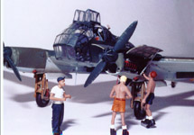
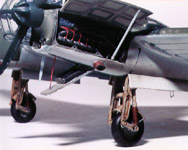
You may click on any of the above pictures to view a larger image